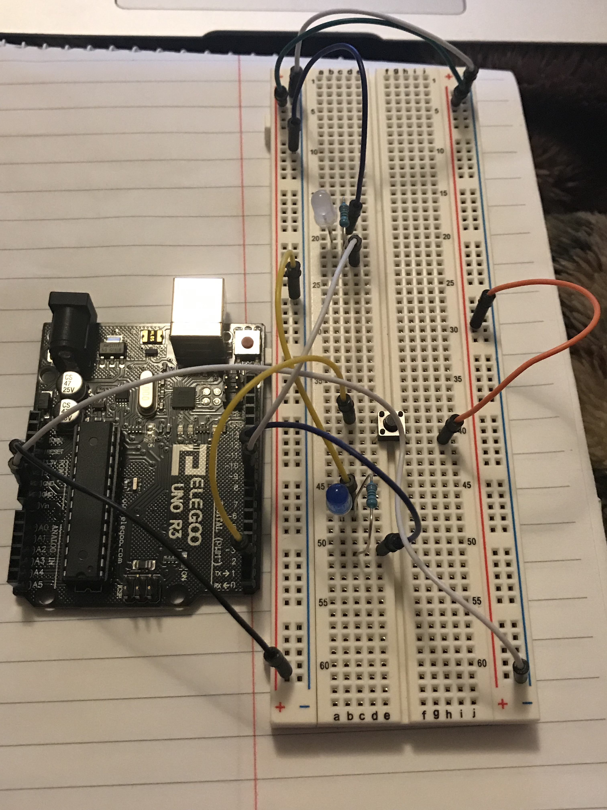

Mulki Mohamed's Assignment 2!
What my circuit looks like:

The schematic drawing of my circuit:
Arduino Code:
// Assignment 2: Lights! That Fade
// Created by Mulki Mohamed
// pin number connected to the button
const int buttonPin = 2;
// pin number connected to the white LED
const int whiteLEDPin = 9;
// pin number connected to the blue LED
const int blueLEDPin = 10;
// represents the state in which the button is in (off or on)
int buttonState = 0;
void setup() {
// initialize the white LED pin as an output
pinMode(whiteLEDPin, OUTPUT);
// initialize the blue LED pin as an output
pinMode(blueLEDPin, OUTPUT);
// initialize the pushbutton pin as an input
pinMode(buttonPin, INPUT);
}
void loop() {
// reads the state of the pushbutton (off or on)
buttonState = digitalRead(buttonPin);
// checks to see if the button has been pressed, represented by a "HIGH"
if (buttonState == HIGH) {
// turn white LED on
digitalWrite(whiteLEDPin, HIGH);
// turn blue LED on
digitalWrite(blueLEDPin, HIGH);
// fade LED pins in
for (int colorFadeValue = 0; colorFadeValue <= 250; colorFadeValue +=10) {
// fade white LED from 0 to 250 by increasing by 10
analogWrite(whiteLEDPin,colorFadeValue);
// fade blue LED from 0 to 250 by increasing by 10
analogWrite(blueLEDPin,colorFadeValue);
//delay time by 30 ms
delay(30);
}
// fade LED pins out
for (int colorFadeValue = 250; colorFadeValue >= 0; colorFadeValue -=10) {
// fade white LED from 250 to 0 by decreasing by 10
analogWrite(whiteLEDPin,colorFadeValue);
// fade blue LED from 250 to 0 by decreasing by 10
analogWrite(blueLEDPin,colorFadeValue);
// delay time by 30 ms
delay(30);
}
} else {
// turn white LED off
digitalWrite(whiteLEDPin, LOW);
// turn blue LED off
digitalWrite(blueLEDPin, LOW);
}
}
>
An animted gif of my circuit: